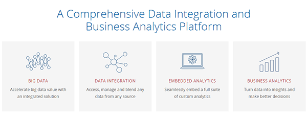
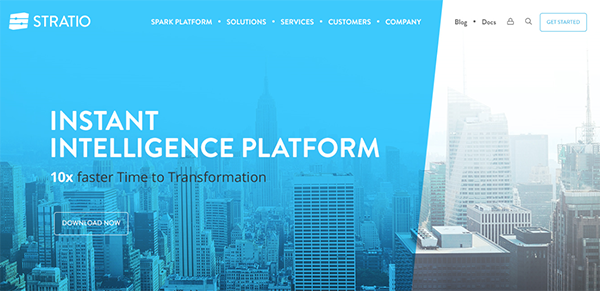
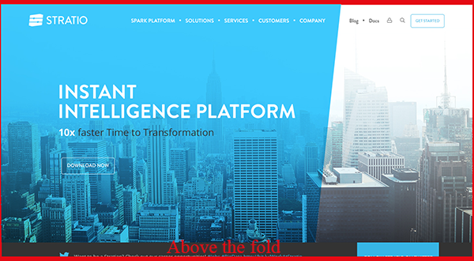
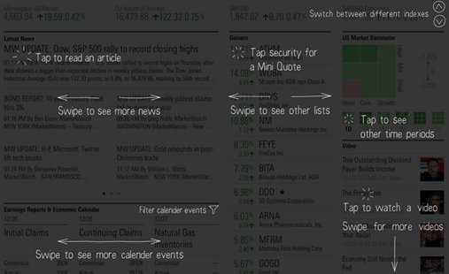

5 The Home Page
The homepage is different from all other Web site pages. A well-constructed homepage will project a good first impression to all who visit the site.
It is important to ensure that the homepage has all of the features expected of a homepage and looks like a homepage to users. A homepage should clearly communicate the site's purpose, and show all major options available on the Web site. Generally, the majority of the homepage should be visible ’above the fold,’ and should contain a limited amount of prose text. Designers should provide easy access to the homepage from every page in the site.
Sources:
5.1 Enable access to the home page from every other page on the Web site (5:3)
Enable users to access the homepage from any other page on the Web site.
Many users return to the homepage to begin a new task or to start a task over again. Create an easy and obvious way for users to quickly return to the homepage of the Web site from any point in the site.
If you include a "Home" link as part of your regular navigation bar, it shouldn't be clickable on the homepage. If you use components, create a special component that is used only on the homepage with an inactive Home link. If it's clickable, some users will inevitably click it and wonder if the page has indeed changed. Similarly, if you link your logo to the homepage from other pages on the site, the logo shouldn't be clickable from the homepage. All other pages on the site do need a link to the homepage.
Sources:
5.2 Locate the primary navigation area in a highly noticeable place (5:2)
... preferably directly adjacent to the main body of the page
Group items in the navigation area so that similar items are next to each other. Grouping helps users differentiate among similar or related categories and see the breadth of products or content you offer. For example, group product categories for prescription medications and over-the-counter medications. Similarly, on an e-commerce site, all items related to shopping, such as the shopping cart, account information, and customer service should be in the same area.
Don't provide multiple navigation areas for the same type of links. Groups that are too similar can fragment and complicate the interface, making the user work too hard to create order and meaning.
Use icons in navigation only if they help users to recognize a class of items immediately , such as new items, sale items, or video content. Don't use icons when simple text links are clearly differentiable from each other, such as in category names. If you find that you need to ponder to come up with an icon for navigation, chances are it's not going to be easily recognizable or intuitive for users. For example, the icons for "Links" and "Forum" on Asia Cuisine don't help to further explain these categories or make them more immediately recognizable; they just clutter the page.
5.3 Create a positive first impression (5:4)
Treat your homepage as the key to conveying the quality of your site.
In terms of conveying quality, the homepage is probably the most important page on a Web site. One study found that when asked to find high quality Web sites, about half of the time participants looked only at the homepage. You will not get a second chance to make a good first impression on a user.
5.4 Communicate the site's value and purpose (4:3)
Clearly and prominently communicate the purpose and value of the website on the homepage.
On average, users browsing or searching the Web spend little time on each website. Emphasize what the website offers that is of value to users, and how it differs from key competitors. This is important because many users misunderstand the purpose of a website.
In some cases the purpose of a website is easily inferred. In other cases, it may need to be explicitly stated through the use of brief text or a tagline.
Do not expect users to read a lot of text or navigate the website to determine its purpose.

Sources:
5.5 Limit prose text on the home page (4:3)
Limit the amount of prose text on the homepage.
The first action of most users is to scan the homepage for link titles and major headings. Requiring users to read large amounts of prose text can slow them considerably, or they may avoid reading it altogether.
Sources:
5.6 Ensure that the home page looks like a home page (4:4)
Ensure that the homepage has the necessary characteristics to be easily perceived as a homepage.
It is important that pages 'lower' in a site are not confused with the homepage. Users have come to expect that certain actions are possible from the homepage. These actions include, among others, finding important links, accessing a site map or index, and conducting a search.

5.7 Home page length: People Scroll Today but only... (3:2)
...If they know that below the fold there are something interesting
Any element on the homepage that must immediately attract the attention of users should be placed 'above the fold' ex: call to action. Information that cannot be seen in the first screenful. But if users conclude that what they see on the visible portion of the page is not of interest, they may not bother scrolling to see the rest of the page.
Some users take a long time to scroll down 'below the fold', indicating a reluctance to move from the first screenful to subsequent information. Older users and novices are more likely to miss information that is placed below the fold.

Sources:
5.8 Announce changes to a site (3:2)
Announce major changes to a Web site on the homepage - do not surprise users.
Introducing users to a redesigned Web site can require some preparation of expectations. Users may not know what to do when they are suddenly confronted with a new look or navigation structure. Therefore, you should communicate any planned changes to users ahead of time. Following completion of changes, tell users exactly what has changed and when the changes were made. Assure users that all previously available information will continue to be on the site.
It may also be helpful to users if you inform them of site changes at other relevant places on the Web site. For example, if shipping policies have changed, a notification of such on the order page should be provided.

5.9 Include a "Contact Us" link on the homepage (2:3)
that goes to a page with all contact information for your company
If you want to encourage site visitors to contact your company directly, instead of seeking information on the website first, include contact information such as the primary address, phone number, and email directly on the homepage.